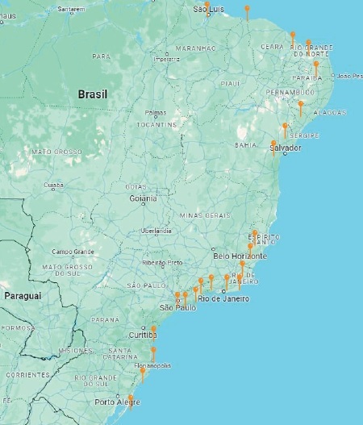

Manter o oceano e a costa litorânea limpos é crucial para a biodiversidade marinha, saúde pública e proteção ambiental. Todos podem contribuir adotando práticas sustentáveis, como reduzir o uso de plásticos, participar de mutirões de limpeza e descartar resíduos corretamente. A conscientização sobre o impacto do lixo e o incentivo à reciclagem são essenciais para promover responsabilidade ambiental, garantindo praias e oceanos limpos para as futuras gerações.
Em que acreditamos?
Encontre o ponto de descarte mais próximo de você.
